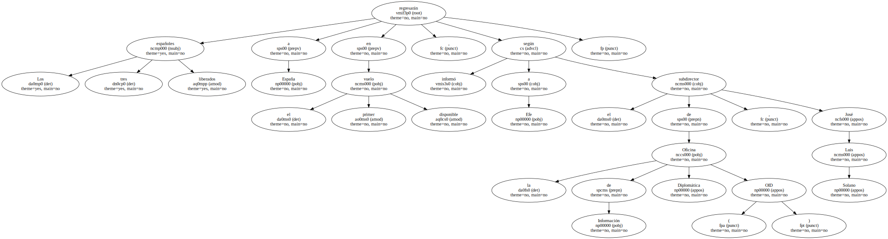
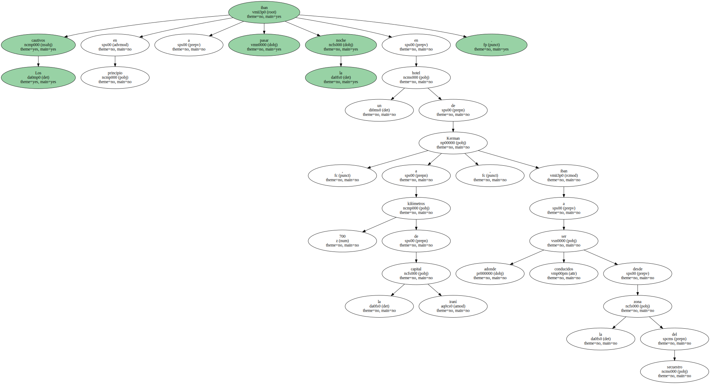
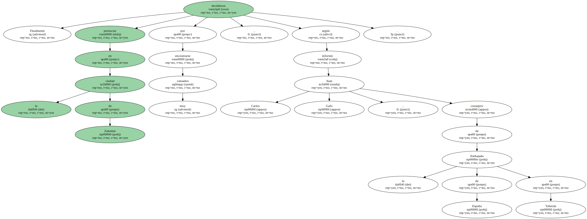

Los tres españoles liberados regresarán a España en el primer vuelo disponible , según informó a Efe el subdirector de la Oficina de Información Diplomática ( OID ) , José Luis Solano.
Los liberados , los religiosos Cosme Puerto y Joaquín Fernández y el informático Pedro García , serán trasladados a Teherán hoy.

Una vez en la capital iraní , regresarán a España en cuanto puedan , a última hora de hoy o mañana.
Los cautivos iban en principio a pasar la noche en un hotel de Kerman , a 700 kilómetros de la capital iraní , adonde iban a ser conducidos desde la zona del secuestro.
Finalmente decidieron pernoctar en la ciudad de Zahedan por encontrarse muy cansados , según informó Juan Carlos Gafo , consejero de la Embajada de España en Teherán.
